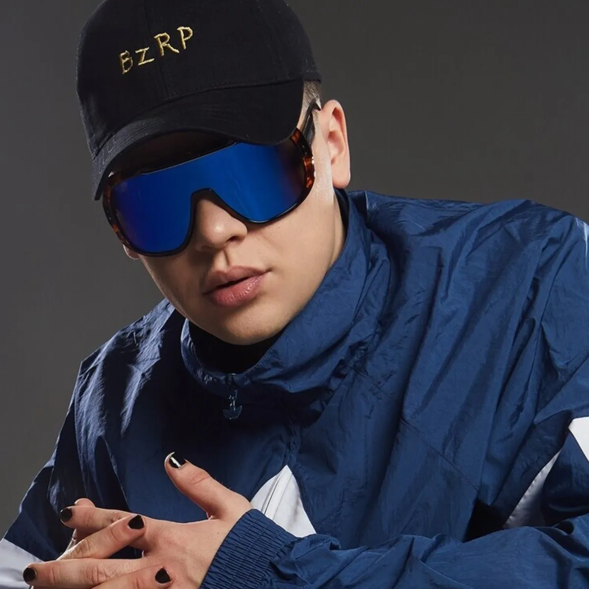

soy biza rrap
Gonzalo Julián Conde (Ramos Mejía, 29 de agosto de 1998), conocido artísticamente como Bizarrap, es un DJ,
compositor y productor argentino. Es conocido por sus BZRP Music Sessions y sus BZRP Freestyle Sessions, sesiones
que realiza junto a otros artistas.1 Entre 2021 y 2022 fue nominado a los Premios Grammy Latinos en las
categorías «mejor fusión/interpretación urbana», «mejor canción de rap/hip hop», «mejor artista nuevo», «productor
del año» y «mejor interpretación reggaeton»